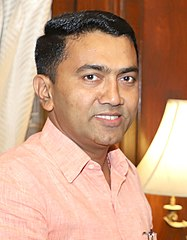
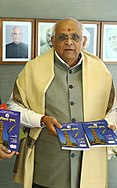
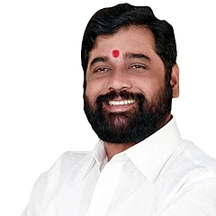
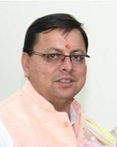

States Of India With their CM & Governer
| Sr.No. |
State name |
Capital name |
Chief minister |
Governer |
| CM Name |
CM image |
Governer name |
Governer image |
| 1. |
Andhra Pradesh |
Amaravati |
Y. S. Jagan Mohan Reddy |
 |
Biswabhusan Harichandan |
|
| 2. |
Arunachal Pradesh |
Itanagar |
Pema Khandu |
|
B. D. Mishra |
 |
| 3. |
Assam |
Dispur |
Himanta Biswa Sarma |
 |
Jagdish Mukhi |
|
| 4. |
Bihar |
Patna |
Nitish Kumar |
 |
Phagu Chauhan |
 |
| 5. |
Chhattisgarh |
Raipur |
Bhupesh Baghel |
|
Anusuiya Uikey |
|
| 6. |
Goa |
Panaji |
Pramod Sawant |
 |
P. S. Sreedharan Pillai |
 |
| 7. |
Gujarat |
Gandhinagar |
Bhupendrabhai Patel |
 |
Acharya Devvrat |
 |
| 8. |
Haryana |
Chandigarh |
Manohar Lal Khattar |
 |
Bandaru Dattatreya |
 |
| 9. |
Himachal Pradesh |
Shimla |
Jai Ram tdakur |
|
Rajendra Arlekar |
 |
| 10. |
Jharkhand |
Ranchi |
Hemant Soren |
 |
Ramesh Bais |
 |
| 11. |
Karnataka |
Bengaluru |
Basavaraj Bommai |
 |
Thawarchand Gehlot |
 |
| 12 |
Kerala |
Trivandrum |
Pinarayi Vijayan |
|
Arif Mohammad Khan |
|
| 13 |
Madhya Pradesh |
Bhopal |
Shivraj Singh Chouhan |
 |
Mangubhai C. Patel |
 |
| 14 |
Maharashtra |
Mumbai |
Eknath Shinde |
 |
Bhagat Singh Koshyari |
|
| 15. |
Manipur |
Imphal |
Nongthombam Biren Singh |
 |
La. Ganesan |
 |
| 16. |
Meghalaya |
Shillong |
Conrad Sangma |
 |
Satya Pal Malik |
|
| 17. |
Mizoram |
Aizawl |
Zoramthanga |
 |
Kambhampati Hari Babu |
|
| 18. |
Nagaland |
Kohima |
Neiphiu Rio |
 |
Jagdish Mukhi |
 |
| 19. |
Odisha |
Bhubaneswar |
Naveen Patnaik |
 |
Ganeshi Lal |
 |
| 20. |
Punjab |
Chandigarh |
Bhagwant Mann |
 |
Banwarilal Purohit |
 |
| 21. |
Rajasthan |
Jaipur |
Ashok Gehlot |
 |
Kalraj Mishra |
 |
| 22. |
Sikkim |
Gangtok |
Prem Singh Tamang |
 |
Ganga Prasad |
|
| 23. |
Tamil Nadu |
Chennai |
M. K. Stalin |
 |
R. N. Ravi |
 |
| 24. |
Telangana |
Hyderabad |
Kalvakuntla Chandrasekhar Rao |
 |
Tamilisai |
|
| 25. |
Tripura |
Agartala |
Manik Saha |
 |
Satyadev Narayan Arya |
|
| 26. |
Uttar Pradesh |
Lucknow |
Yogi Adityanath |
 |
Anandiben Patel |
|
| 27. |
Uttarakhand |
Dehradun |
Pushkar Singh Dham |
 |
Gurmit Singh |
 |
| 28. |
West Bengal |
Kolkata |
Mamata Banerjee |
 |
Jagdeep Dhankhar |
 |